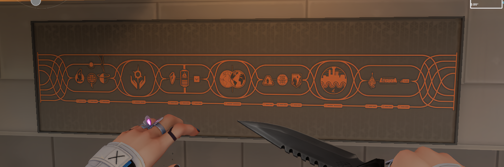
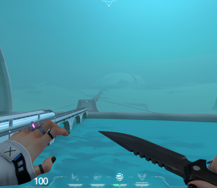
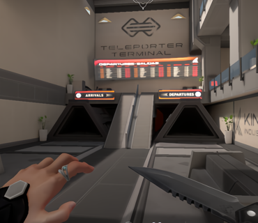
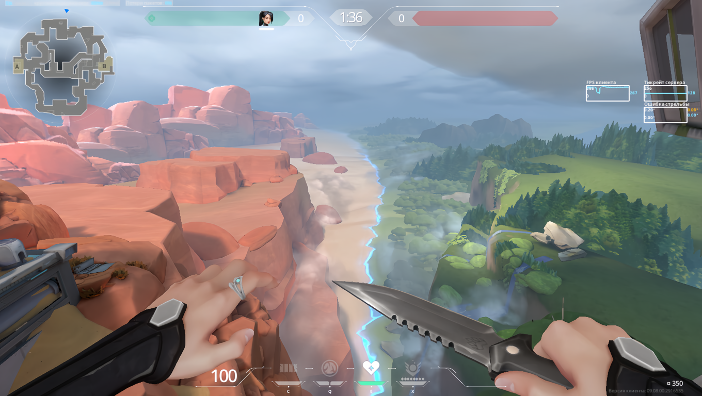
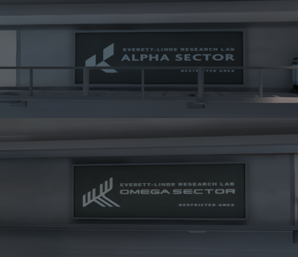
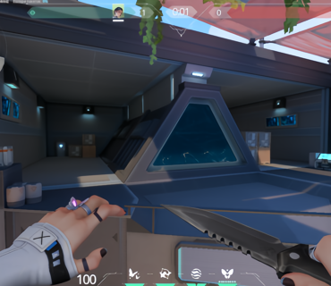
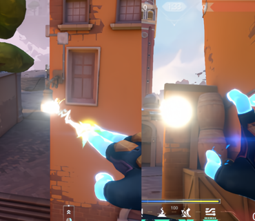
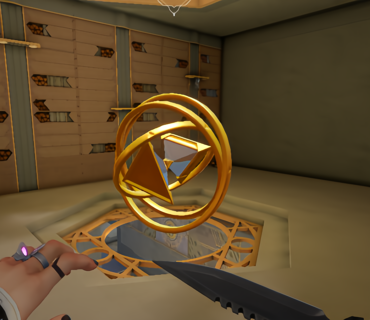
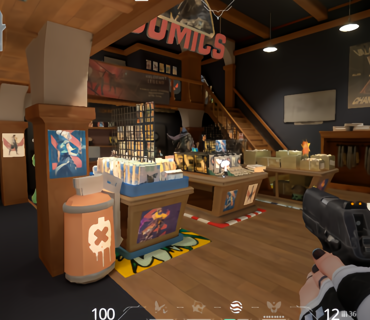
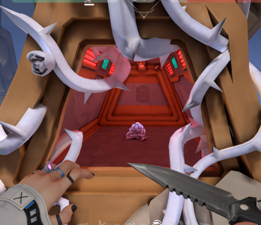

Неподалеку от места с изображением истории вселенной можно обнаружить музей, посвященный разработкам и изобретениям. Первым экспонатом, который привлекает внимание, является специализированная одежда. Трудно точно сказать, для чего она использовалась, но можно предположить, что это один из первых костюмов для работы с радианитом. Рядом находятся обломки, возможно, первого портала на Альфа-планету, который, как можно заметить, был неисправен. На следующей витрине можно увидеть макет или сам радианит, а также специализированные перчатки и некое изобретение, о предназначении которого мы может только догадываться.
ПАСХАЛКИ
Riot Games любят заполнять свой шутер скрытыми деталями и пасхалками. Секреты можно обнаружить в каждом тизере VALORANT, связанном с выходом новой карты или агента. Однако искать секреты можно не только в видео и изображениях. Каждая карта в игре содержит свои уникальные отсылки, тайные детали и загадки.


Насколько известно из лора, на планете Омега произошла какая-то трагедия в ходе чего города находятся под куполом. Вылетев за пределы карты Pearl можно увидеть, несколько куполов, которые соединяются специальным проводом для метро.
СВЯЗЬ АЛЬФЫ И ОМЕГИ
Чембер стал первым агентом, который установил дружеские связи с Чембером из зеркальной вселенной. Вместе они взорвали первый портал, созданный в сотрудничестве Kindom Альфа и Омега. Карта Fracture стала результатом этого взрыва, и именно на ней можно найти разрушенный портал.



Изучая данную карту, можно обнаружить таблички с указанием, к какому сектору принадлежит участок. Благодаря этому с уверенностью можно сказать, что пустынная часть карты принадлежит Омеге, где расположены активированные ящики с оранжевым радианитом. Ростительная часть карты относится к Альфа-вселенной, и именно там находятся зелёные ящики радианита, за которыми так охотится легион Valorant.

Кроме Fracture портал есть и на карте Breeze, однако если начать сравнивать данный портал с тем, который создало сотрудничество Kindom можно предположить, что он является односторонним.
СКРЫТЫЕ КОМНАТЫ
На некоторых картах имеются скрытые комнаты, в которые можно попасть только при помощи официальных читов доступных в своей игре.
ИНТЕРЕСНЫЕ ФАКТЫ
Riot Games крайне любят добавлять на карты плюшевые игрушки зверят. Их можно найти как на карте, так и за её пределами.

Если ультой Неон навести на фонари и подождать некоторе время, то они загорятся и будут светиться некоторое время.

Так как карта Abyss является базой организации “Дети песочных часов, то на карте есть прямая отсылка к названию организации.

На карте Pearl есть сувенирный магазинчик, который показывали в тизере “ОСОЗНАНИЕ”, который был выпущен к запуску 5 эпизода. Его показали в момент, когда команда протокола валорант пытался избежать сражения на планете Омега.

На карте Abyss, если вылететь за пределы карты, то можно увидеть Омена в башне, которая обвеяна металлическими розами Вайз.